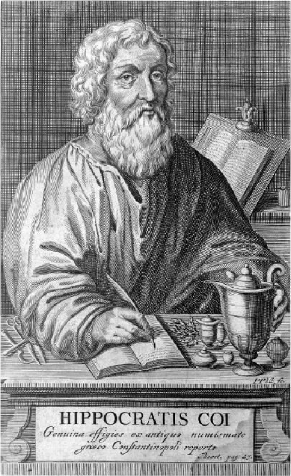

‘mind’
‘spirit’
‘body’
Origin and Development of Well-being
1950s
The concept of well-being or wellness first appeared in the 1950s. This concept expanded in the 1970s to encompass the three major components of physical, mental, and social well-being.
1980s
By the 1980s, the concept of well-being had evolved even further, beginning to incorporate elements of spiritual well-being as well. This was a reflection of a growing cultural understanding that true wellness extends beyond just the physical, mental, and social aspects of our lives. An emphasis on personal growth and self-actualization began to permeate the concept of well-being.
2000s
Fast forward to the 2000s, and the concept of well-being had started to include environmental wellness too. As awareness about the state of our planet grew, people began to understand that individual and societal well-being is deeply connected to the health of our environment. This led to a more holistic view of well-being that takes into account our relationship with the natural world.
Ancient Greek Understanding of
Well-being
the Ancient Greek period from
800 BC to 146 BC
The understanding of wellbeing in
ancient Greece was predicated upon the
value given to the balance among the
body, mind, and spirit. This perspective would have permeated
throughout the society of that time.
In the eyes of the ancient Greeks, not only physical health
but also mental and
spiritual health were considered vital. For them, the body,
mind, and spirit were not separate entities but interconnected
and interactive aspects of the human
experience, which shaped their approach
to human health and happiness.
They held a belief that true wellbeing
could only be achieved when the body,
mind, and spirit were in harmony. This perspective would have
been widely accepted across all strata of society, profoundly
influencing their lifestyle, decision-making processes, and
value system.
Hippocrates

Ancient Greek
Concept of Wellbeing
In ancient Greece, 'wellbeing' was a concept that emphasized the balance of body, mind, and spirit. This was a primary focus for people of that era in enhancing their quality of life. This understanding was deeply rooted in their daily lives, social structures, and even religion.
Hippocrates'Approach
However, Hippocrates expanded this original concept in a more concrete and practical direction. He reinterpreted 'wellbeing' not merely as the balance of body, mind, and spirit in an ideal state, but as 'diet, exercise, and rest', practical methods of maintaining health.
The Impact of Hippocrates'
Interpretation
Hippocrates' approach provided an opportunity for the people of ancient Greece to gain a more tangible and specific understanding of 'wellbeing'. In this way, he brought the concept of 'wellbeing' down from an ideal state to practical life, providing practical methodologies necessary for people to take responsibility for and manage their health. This could be seen as an innovative expansion of the understanding of 'wellbeing' in ancient Greece.
Modern Concept of Well-being
Modern Understanding of Personal Well-being
The modern concept of well-being encompasses a variety of elements that contribute to the improvement of an individual's quality of life. Beyond physical health, mental well-being, emotional stability, and job satisfaction are recognized as important components. Mental well-being refers to the ability to manage stress and adapt to changes, while emotional stability represents the capacity to navigate life's emotional ups and downs. Furthermore, job satisfaction indicates the sense of fulfillment and achievement derived from one's profession.
Modern Understanding of Social and Environmental
Well-being
Social connectivity, intellectual development, and environmental well-being also form integral parts of the contemporary concept of well-being. Social connectivity implies communication and a sense of belonging, as well as mutual support. Intellectual development denotes continuous learning and personal growth. Lastly, environmental well-being pertains to living in a healthy and safe environment, which significantly impacts our physical and mental well-being. All these elements constitute the modern understanding of well-being, contributing to the enhancement of an individual's quality of life.
-
Mental health
Refers to the state of an individual's mental health, encompassing stress management, positive thinking, prevention of mental disorders, etc.
-
Emotional stability
Refers to the ability of an individual to appropriately recognize and express emotions, and effectively manage negative emotions.
-
Social connectivity
Refers to the ability of an individual to maintain healthy relationships with society, understand their role within it, and receive social support.
-
Job satisfaction
Refers to the state where an individual finds satisfaction in their job, and can feel a sense of achievement and pride through their work.
-
Intellectual development
Refers to the ability of an individual to expand knowledge through learning, develop creative thinking, and find new ideas or solutions.
-
Environmental well-being
Refers to the ability of an individual to respect and protect their physical environment, contributing to maintaining a healthy and safe environment.
Physical
Mental
Social
Occupational
"Proper exercise and nutrition
maintain health."
"Stress management and inner
strength are key for mental health."
"Healthy relationships contribute
to social wellness."
"A meaningful career and
work-life balance enhance
wellbeing."